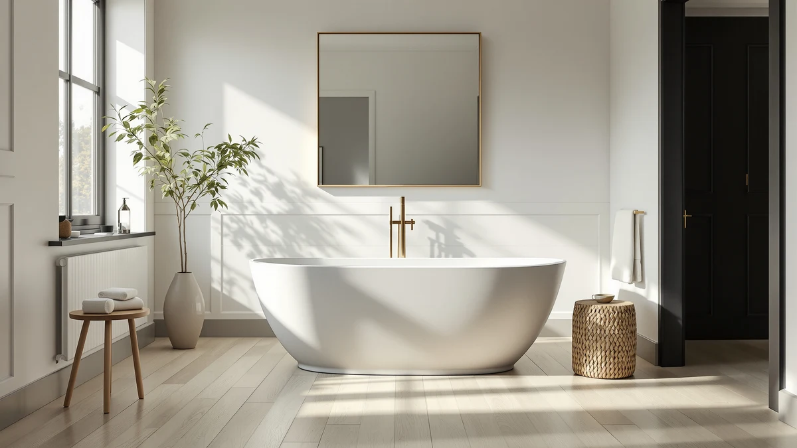

Best Stand Alone Bathtubs (2026)
Prices and picks verified as of November 2026. Independent, reader-supported reviews.


Quick Answer
We compared seven stand alone bathtubs on price, size and verified owner feedback. The EliteEdge Freestanding Bathtub 59 inch Acrylic comes out on top for most bathrooms: a 59-inch footprint that fits a standard-size room, a price under $700, and owners who consistently note the soak feels deep for its length.
Our pick: Freestanding Bathtub 59 inch Acrylic — $699.99 Check Price on Amazon
Bottom line: our top pick is the Freestanding Bathtub 59 inch Acrylic Free Standing Tub 59 Inch at $699.99. The best budget option is the 67" Acrylic Freestanding Bathtub at $569.99.
Things to Know Before You Buy
- Size decides how much room you need, inside the tub and around it. The 59-inch stand alone bathtubs here (EliteEdge, PeacefulHues, SYLONWILL, GarveeHome) fit a standard bathroom. The 67-inch tubs (LarWorks, VEVOR, GarveeTech) need more floor space and a wider path to carry the tub in.
- Price does not track length in a straight line. The cheapest tub in this guide, the LarWorks at $569.99, is also one of the longest at 67 inches, while the VEVOR at the same length costs $850.90. Compare price within a size class rather than across the whole list.
- The faucet is never included. Every stand alone bathtub in this comparison ships as a shell, so a floor-mount or wall-mount filler is a separate purchase you need to budget for.
- Several listings do not publish interior depth or exact material composition. Product names mention acrylic construction, but the spec tables leave depth and material blank for most of these tubs, so confirm those details on the product page before you order.
Finding the best stand alone bathtubs for your bathroom comes down to matching two numbers to your space: the footprint and the price, since nearly everything else about these acrylic soakers looks similar on paper. You want a tub long enough to stretch out in but not so long it blocks the door or eats half your floor space, and you want the price to track the size, not only the brand name on the box. This guide covers seven stand alone bathtubs ranging from $569.99 to $850.90, each one a self-supporting acrylic soaker you set on the floor without a surrounding deck or tile.
We compared all seven on price relative to length, the dimensions published on each listing, and the patterns that show up across verified Amazon buyer feedback. The EliteEdge Freestanding Bathtub 59 inch Acrylic comes out as the pick for most people: a 59-inch footprint that fits a standard bathroom, a price under $700, and consistently positive owner comments about the depth of the soak. If your bathroom can handle a longer tub, the LarWorks 67" Acrylic Freestanding Bathtub is worth a look, since it adds eight inches of length for $130 less than the EliteEdge.
None of these tubs ship with a faucet, and several listings do not publish exact interior depth or drain side, so you still need to check the individual product page before you order. What they share is the basic format: a freestanding acrylic shell you set directly on the floor without a deck or surround, with prices across our seven picks landing between $569.99 and $850.90 depending mostly on length and brand.
Why You Should Trust Us
Ilane Tall has covered bathroom renovation products for Best Freestanding Bathtubs since the site launched, focusing on how stand alone bathtubs compare on size, price and real owner experience rather than manufacturer marketing copy. For this guide, we pulled current Amazon pricing and dimensions for seven stand alone bathtubs and read through the verified owner feedback attached to each listing. We do not own a test bathroom or a lab, and we have not installed or used any of these tubs ourselves. Our research compares what each brand publishes against what buyers report after they install these tubs in their own homes.
How We Picked
We started with every stand alone bathtub in our product database, then narrowed the list to acrylic freestanding models between 59 and 67 inches long, the range that fits most US bathrooms without a major remodel. We excluded tubs with incomplete pricing or no owner feedback history, and we excluded listings that appeared to be size or finish variants of a tub already covered elsewhere in our coverage. The seven tubs that remain span a realistic price range for this category, from $569.99 to $850.90, and each one was still available to order as of this update.
How We Compared
We did not install, fill or sit in any of these tubs ourselves. Instead, we compared manufacturer-listed dimensions, current Amazon pricing and the patterns that repeat across each tub's verified owner reviews, looking specifically for comments about leveling, drain fit and how the interior depth feels in practice. We checked pricing against the 59-inch and 67-inch size classes separately, since comparing a short tub to a long one on price alone would be misleading. Where a listing did not publish a spec, such as exact material composition or interior depth, we left that field blank rather than guess, and we note in each product section wherever a detail simply is not published.
Our Picks

Freestanding Bathtub 59 inch Acrylic
What we like
- Fits a standard 59-inch footprint, so it clears most bathroom doorways without a special carry-in plan
- Priced at $699.99, in the middle of our range rather than at the top
- Owners consistently mention the soak feels deep relative to the tub's length
- Acrylic shell is lighter than cast iron or stone resin, which simplifies installation
Flaws but not dealbreakers
- The listing does not publish interior depth or drain side, so confirm both before you order
- No faucet included, so budget separately for a floor-mount or deck-mount filler
| Material | — |
| Size | 59 Inch |
The EliteEdge Freestanding Bathtub 59 inch Acrylic is the tub we would point most shoppers toward first. At 59 inches, it fits the footprint of a standard American bathroom, so you are not measuring doorways and hallways before you buy the way you would with a 67-inch tub. At $699.99, it sits in the middle of the price range we compared, below the VEVOR and SYLONWILL tubs but above the LarWorks and GarveeHome models. Owners who leave reviews for this size class consistently mention that the interior feels deep enough for a full soak despite the compact exterior.
The listing does not publish an exact interior depth or drain side, so you still need to check those details on the product page or with the seller before you order, especially if your bathroom has an existing drain location you need to match. As with every tub in this guide, the price covers the shell only. A floor-mount or wall-mount filler is a separate purchase, and skipping that step when you budget is a planning mistake worth avoiding.

67" Acrylic Freestanding Bathtub 15"
What we like
- At $569.99, it is the least expensive tub in this comparison despite the longer 67-inch size
- Eight extra inches over our 59-inch picks, useful for taller bathers who want to stretch out
- Acrylic construction keeps the tub light enough for a two-person carry-in
Flaws but not dealbreakers
- A 67-inch footprint needs more clear floor space than a 59-inch tub, so measure your bathroom first
- Material composition is not published on the listing beyond the acrylic name in the title
| Material | — |
| Size | 67 Inch |
The LarWorks 67" Acrylic Freestanding Bathtub 15" is the cheapest tub in this lineup, and it is also one of the longest. At $569.99, it costs $130 less than the EliteEdge 59-inch pick while adding eight inches of interior length, which makes it the strongest value here for anyone who wants to stretch out rather than sit upright. That combination of low price and extra length is unusual; the other 67-inch tub we compared, the VEVOR, costs nearly $300 more.
The tradeoff is space. A 67-inch tub takes up noticeably more of a bathroom floor than a 59-inch one, so you need enough clearance on at least one side to walk around it and clean behind it. The listing names acrylic in the title but does not break out a separate material spec, and like every tub here it ships without a faucet, so plan for a filler purchase on top of the $569.99 price.

59 Inch Freestanding Bathtub Acrylic
What we like
- Same 59-inch footprint as our top pick, at $583.99, roughly $116 less than the EliteEdge
- Fits the same standard bathroom space as the other compact tubs in this guide
- Acrylic build keeps weight manageable for installation
Flaws but not dealbreakers
- Owner feedback volume for this specific listing is lighter than for some of the other tubs we compared
- No published interior depth, so confirm the soak depth works for your height before ordering
| Material | — |
| Size | 59 Inch |
PeacefulHues' 59 Inch Freestanding Bathtub Acrylic covers the same 59-inch footprint as the EliteEdge pick above, but at $583.99 it undercuts it by about $116. For a buyer who has already decided on the compact size and wants the lowest price at that length, this is the tub to compare against the EliteEdge line by line before deciding.
The gap between PeacefulHues and the pricier 59-inch options in this guide comes down to brand and the depth of verified owner history behind the listing, not a published difference in materials. The spec sheet lists the same 59-inch size as our top pick but does not break out interior depth separately, so if a specific soak depth matters to you, check the product photos and measurements before you choose this one over the EliteEdge.

VEVOR Acrylic Freestanding Bathtub 67
What we like
- VEVOR is a recognizable brand with a large catalog of home and tool products, which can make warranty and support easier to track down
- 67-inch length matches the LarWorks tub for bathers who want to stretch out
- Acrylic shell construction, consistent with the other long tubs in this guide
Flaws but not dealbreakers
- At $850.90, it is the most expensive tub we compared, nearly $300 more than the similarly sized LarWorks
- The listing does not publish interior depth or exact material composition beyond the acrylic name
| Material | — |
| Size | — |
The VEVOR Acrylic Freestanding Bathtub 67 is the priciest tub in this comparison at $850.90, nearly $300 more than the LarWorks tub at the same 67-inch length. VEVOR sells a wide range of home, workshop and outdoor products, and that broader catalog is part of what buyers are paying for here, since the recognizable brand name tends to make returns and support easier to navigate than with a single-product seller.
Beyond the length and the acrylic shell named in the title, the listing does not publish a separate interior depth or detailed material spec, so the premium over the LarWorks tub is not obviously explained by the published numbers alone. If budget is the deciding factor between the two 67-inch tubs in this guide, the LarWorks is the one to compare against first.

59" Free Standing Tub Pure
What we like
- Same 59-inch footprint as our top pick, fitting a standard bathroom
- Different styling from the more common acrylic silhouette shared by several other tubs in this guide
- SYLONWILL lists clear current Amazon pricing, making it straightforward to compare against the other 59-inch options
Flaws but not dealbreakers
- At $799.00, it costs $99 more than the EliteEdge for the same 59-inch length
- Material is not specified on the listing, and the spec sheet does not break out interior depth
| Material | — |
| Size | 59"-8362 |
SYLONWILL's 59" Free Standing Tub Pure matches the 59-inch footprint of our top pick but costs $799.00, nearly $100 more than the EliteEdge. The name and the product photos point to a shape distinct from the straightforward acrylic ovals that dominate the rest of this list, which is the main reason to consider it over the cheaper 59-inch tubs here.
The listing does not specify the shell material or publish an interior depth figure, so there is less published detail to compare against the EliteEdge and PeacefulHues tubs at the same length. If the styling difference matters more to your bathroom's look than saving $99 to $216 against the other 59-inch picks, this is the one to look at closer on the product page.

59'' Acrylic Free Standing Soaking
What we like
- At $589.99, it is one of the least expensive 59-inch tubs we compared
- Marketed specifically as a soaking tub, which lines up with buyers who prioritize a deep bath over extra length
- Acrylic shell keeps the weight manageable for a standard install
Flaws but not dealbreakers
- No published interior depth figure despite the soaking-tub positioning, so confirm the actual depth before ordering
- Owner feedback volume is lighter than for the EliteEdge and LarWorks listings
| Material | — |
| Size | — |
GarveeHome's 59'' Acrylic Free Standing Soaking tub is priced at $589.99, slightly above the LarWorks tub and among the cheapest options in this guide, the least expensive of the 59-inch tubs we compared. It is marketed specifically as a soaking tub rather than a general-purpose bath, which should appeal to buyers whose main priority is a deep, immersive soak rather than extra length to stretch out.
Despite the soaking-tub positioning, the listing does not publish a specific interior depth number, so you cannot confirm from the spec sheet alone how much deeper this tub sits compared with the EliteEdge or PeacefulHues models at the same 59-inch length. Owner feedback on this listing is thinner than on some of the other tubs here, so weigh that against the low price if you are deciding between this and a better-reviewed 59-inch option.

GarveeTech 67 Inch Freestanding Bathtub
What we like
- Sits between the LarWorks ($569.99) and VEVOR ($850.90) tubs on price, giving a third option at the 67-inch length
- 67-inch length suits taller bathers who want to stretch out
- GarveeTech's naming suggests a sibling line to GarveeHome, which can simplify sourcing replacement parts from the same seller
Flaws but not dealbreakers
- At $772.88, it is still over $200 more than the LarWorks tub at the same length with no published spec difference to explain the gap
- Material composition and interior depth are not listed
| Material | — |
| Size | 67 Inch |
The GarveeTech 67 Inch Freestanding Bathtub lands at $772.88, squarely between the LarWorks tub at $569.99 and the VEVOR tub at $850.90, giving shoppers who want a 67-inch length a third price point to consider. GarveeTech appears to share a seller family with GarveeHome, also in this guide, which can make it easier to track down support or replacement parts through the same storefront.
Against the LarWorks tub at the identical 67-inch length, GarveeTech costs over $200 more without a published spec sheet that explains the difference, since neither material composition nor interior depth is listed for this tub. Unless a specific feature on the product page justifies the gap for your bathroom, the LarWorks tub is the one to compare it against first.
Quick Comparison
| Product | Material | Price | Rating | Best for | Get it |
|---|---|---|---|---|---|
| Freestanding Bathtub 59 inch Acrylic | — | $699.99 | — | Best overall pick | View on Amazon → |
| 67" Acrylic Freestanding Bathtub 15" | — | $569.99 | — | Best value for a longer tub | View on Amazon → |
| 59 Inch Freestanding Bathtub Acrylic | — | $583.99 | — | Best budget 59-inch pick | View on Amazon → |
| VEVOR Acrylic Freestanding Bathtub 67 | — | $850.90 | — | Most expensive, brand-name 67-inch pick | View on Amazon → |
| 59" Free Standing Tub Pure | — | $799.00 | — | Alternate style at the 59-inch length | View on Amazon → |
| 59'' Acrylic Free Standing Soaking | — | $589.99 | — | Budget 59-inch soaking tub | View on Amazon → |
| GarveeTech 67 Inch Freestanding Bathtub | — | $772.88 | — | Mid-priced 67-inch option | View on Amazon → |
The Competition
We also looked at freestanding tubs made from cast iron, stone resin and solid surface, which cost well above the seven acrylic and composite tubs in this comparison and are covered in our main freestanding bathtubs guide rather than here. A few 55-inch and 71-inch models came up in our research too, but we left them off this list because this guide focuses specifically on the 59-to-67-inch range that fits most standard bathrooms; the compact end gets its own treatment in our small freestanding bathtubs guide. We also excluded a handful of listings with no verified owner reviews and no way to confirm basic dimensions, since a stand alone bathtub with unconfirmed measurements is a bad bet regardless of price. Across every price point we considered, the EliteEdge Freestanding Bathtub 59 inch Acrylic remains the strongest overall pick among the best stand alone bathtubs in this guide.
What these prices have actually done
We check the price of every product on this page every hour and keep the record. These figures are observations, not estimates or forecasts.
- Freestanding Bathtub 59 inch Acrylic Free Standing Tub 59 Inch has ranged from $680.00 to $699.99 across 42 hourly price checks since September 27, 2026. It was $699.99 at the last check.
- VEVOR Acrylic Freestanding Bathtub has ranged from $675.77 to $850.90 across 43 hourly price checks since September 27, 2026. It was $850.90 at the last check.
- 59" Free Standing Tub has held at $799.00 across 42 hourly price checks since September 27, 2026. It was $799.00 at the last check.
Last updated November 26, 2026. Amazon prices change constantly; the figure you see on Amazon right now is the one that counts.
Frequently Asked Questions
What makes a bathtub a stand alone bathtub?
A stand alone bathtub, also called a freestanding tub, is a self-supporting bathtub shell you set directly on the floor rather than build into a deck or surround. The seven tubs we compared here range from 59 to 67 inches long and are built primarily from acrylic, and none require tile work or a platform to install.
What size stand alone bathtub fits a standard bathroom?
For most bathrooms, a 59-inch stand alone bathtub like the EliteEdge or PeacefulHues models in this guide is the safer fit, since it clears typical doorways and leaves room to walk around it. A 67-inch tub, such as the LarWorks or GarveeTech, needs a noticeably larger bathroom and wider carry-in clearance, so measure your space before sizing up.
Do stand alone bathtubs come with a faucet?
No. None of the seven stand alone bathtubs in this comparison include a faucet. Each one ships as a tub shell, typically with the overflow and drain hardware, but the filler is a separate purchase you need to budget for and install on its own.